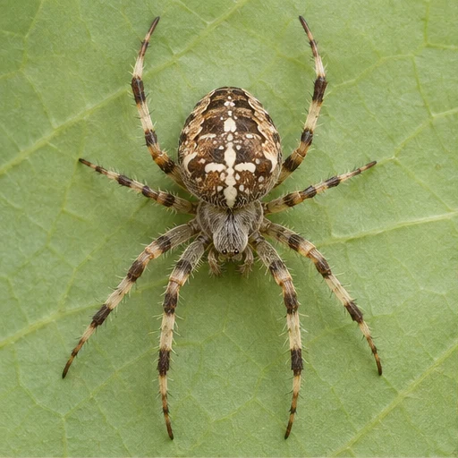

01Qu’est-ce qu’un attribut ?
Une caractéristique qui permet de décrire un être vivant.
MISSION 02 / 06 · CLASSIFICATION
Déterminer le groupe d’un animal

DÉFI 1 / 5
0 patte comptée
Le gendarme
Les antennes sont au-dessus de la tête.

L’araignée
Les pattes sont disposées par paires.
Les animaux
Tu peux aussi choisir une photo, puis son groupe.
Compte les pattes ou cherche la coquille.
Le gendarme
Cherche les deux prolongements devant la tête.
L’escargot
Cherche la forme en spirale.
BILAN DE LA MISSION
Le gendarme est un insecte. Il a six pattes et une paire d’antennes. L’araignée est un arachnide à huit pattes. L’escargot est un mollusque reconnaissable à sa coquille.
Une caractéristique qui permet de décrire un être vivant.
Il possède trois paires de pattes, une paire d’antennes et un squelette externe.
Ce sont des groupes et des sous-groupes d’êtres vivants organisés selon leurs attributs communs.
L’escargot, la coccinelle et l’araignée ont en commun l’absence de colonne vertébrale.
La coccinelle a six pattes. L’araignée en a huit.
La présence d’une coquille.
Elle sert à identifier un être vivant à partir de ses attributs observables.
Les insectes ont trois paires de pattes et les arachnides en ont quatre.